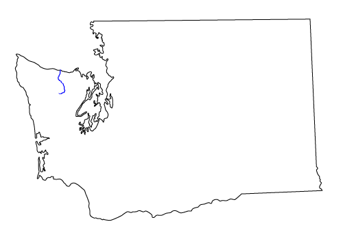
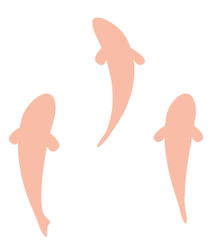
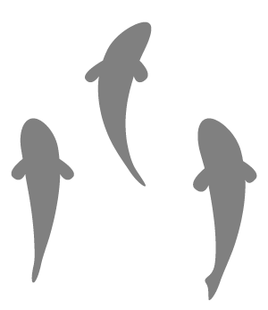

For thousands of years, salmon was the center of culture for the Lower Elwha Klallam Tribe.
"My grandmother told me when I was a child, that the fish were so thick you could walk across them."
- Mel Elofson, Lower Elwha Klallam Tribe Fisheries
The Elwha Dam was built in 1910 to supply power to Port Angeles.
It was built five miles from the mouth of the river
at 108 feet tall
and without fish ladder.
For more than a century, salmon were blocked from swimming up the Elwha
After the Federal Government ruled that the costs outweighed the benefits, the Elwha dam began coming down in 2011.
Tons of sediment was released - the habitat began repairing itself for the return of salmon.
2011
chinook salmon
steelhead trout
More stuff here
The river is still changing, but the signs are good, and the Klallam look forward to the future.
"I may not see the abundance of fish come back in my lifetime, but I would like to see it come back for my grandchildren, my great grandchildren, and the rest of my people, the following generations to come. It was a gift from our Creator, it was our culture and heritage."